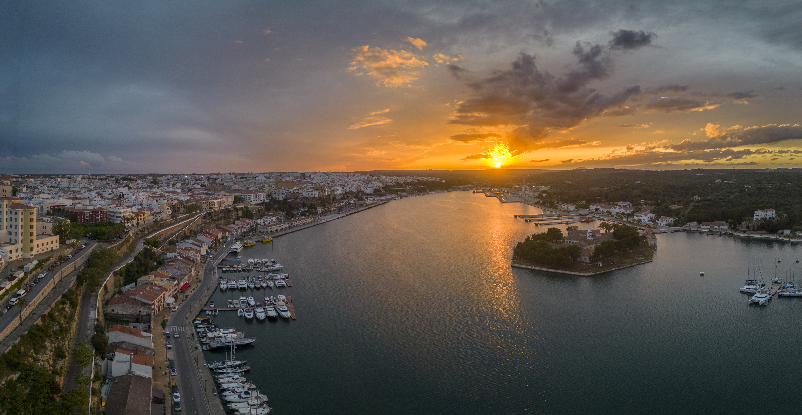
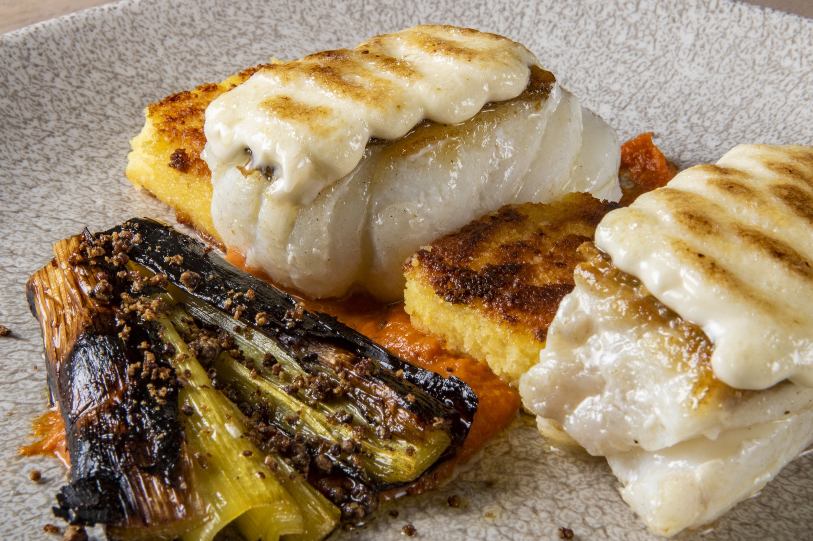

01 / ESTANCIA
Espacios que se sienten
Habitaciones, zonas comunes y bienestar mostrados desde la experiencia real del huésped.
Una propuesta visual para mostrar la personalidad de los hoteles abba y las experiencias que los rodean.
DESCUBRIR LA PROPUESTA ↘Un hotel es el punto de partida para descubrir un lugar. La propuesta es crear imágenes que conecten sus espacios con la gastronomía, el entorno y las experiencias que hacen especial cada estancia.
Desde Bilbao, puedo trabajar cerca de vuestros hoteles del norte y desplazarme a otros destinos para producir contenido adaptado a cada establecimiento.

Una producción a medida para renovar vuestra comunicación y dar a cada alojamiento una identidad visual reconocible.
Habitaciones, zonas comunes y bienestar mostrados desde la experiencia real del huésped.

Fotografía y vídeo para restaurantes, platos y momentos alrededor de la mesa.

Ciudad, costa y naturaleza: contenido que conecta el hotel con las razones para visitarlo.
Podemos empezar por uno o varios hoteles, definir juntos qué necesitáis comunicar y crear una colección de fotografías y vídeos para vuestra web, campañas y redes. También puedo desarrollar la campaña completa con mi equipo.
El alcance, los formatos, los usos y el tiempo de producción se ajustan a vuestras necesidades.
Las imágenes muestran trabajos anteriores de Juan Aizpuru y no representan establecimientos abba.
Me encantaría conocer vuestras prioridades y explorar cómo crear nuevas imágenes para vuestros hoteles y destinos.
VER MI TRABAJO ↗JUAN AIZPURU · FOTOGRAFÍA Y VÍDEO · BILBAO